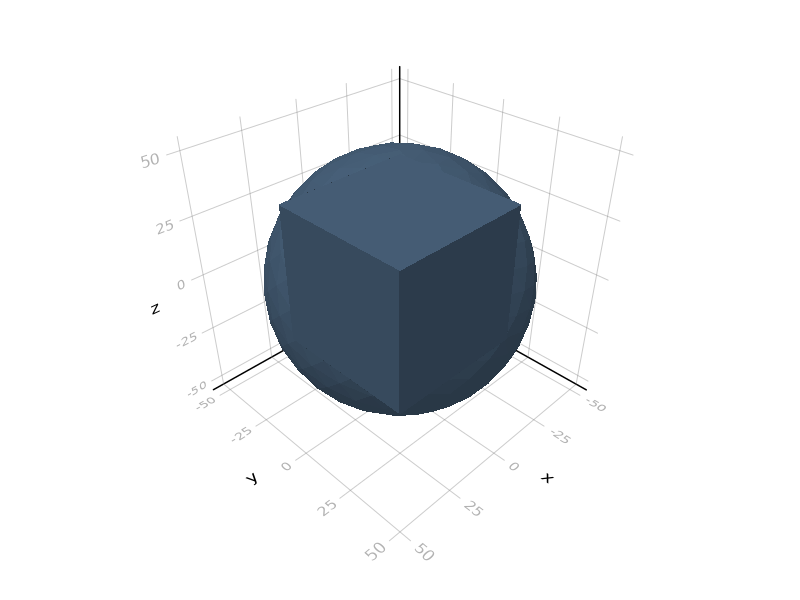
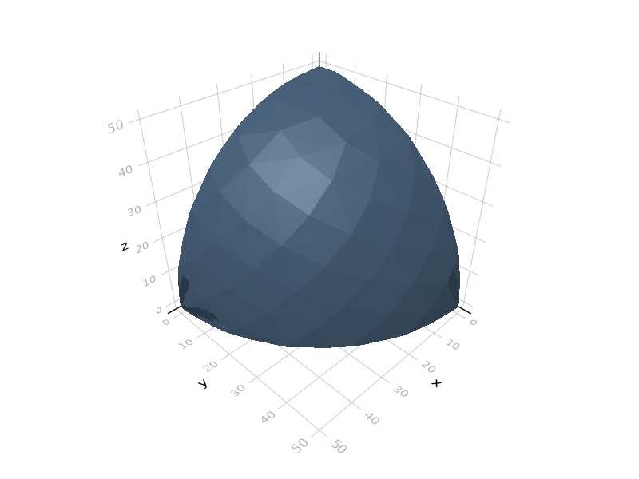
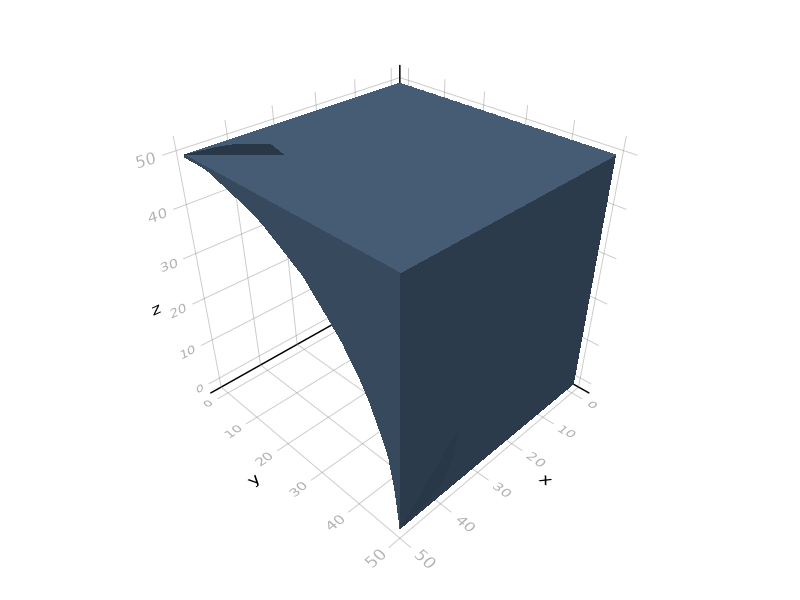
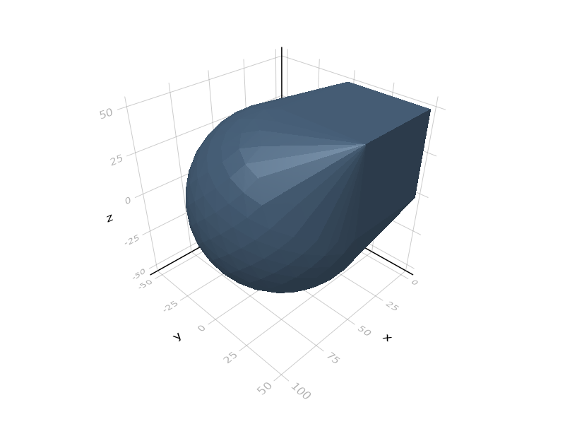
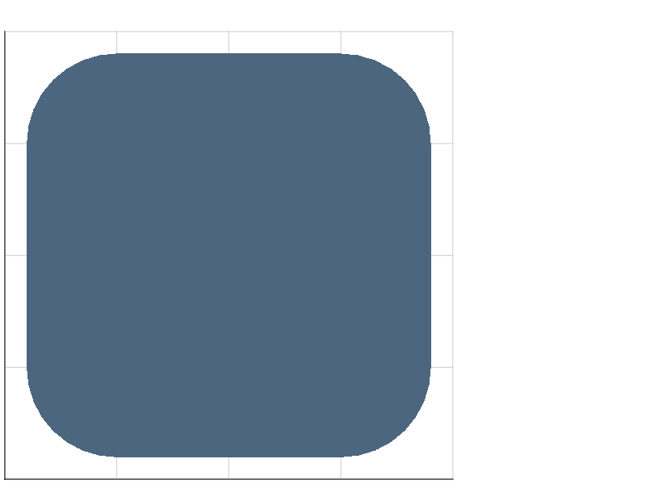
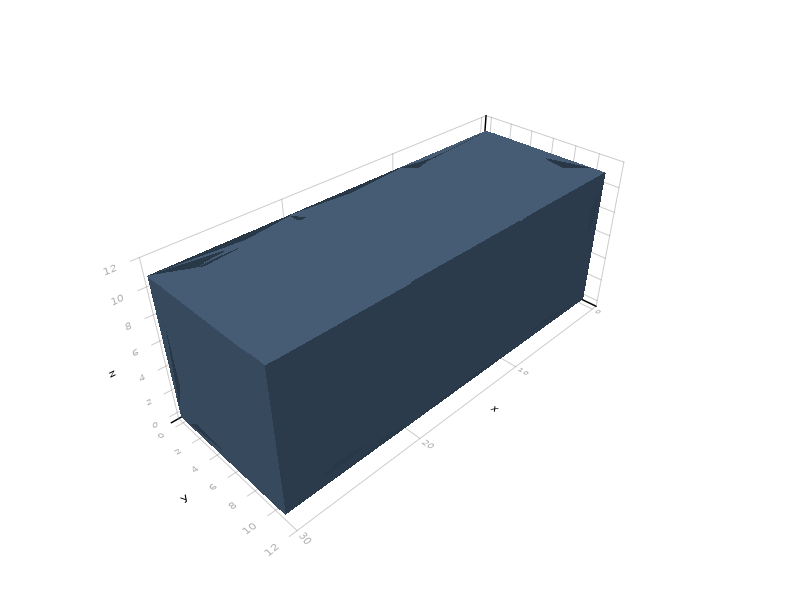
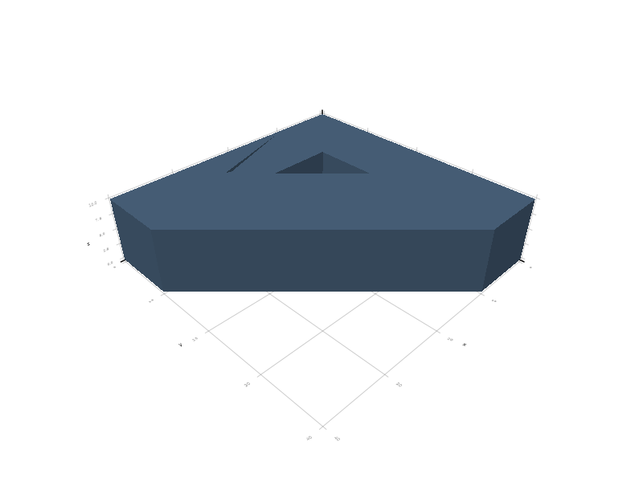
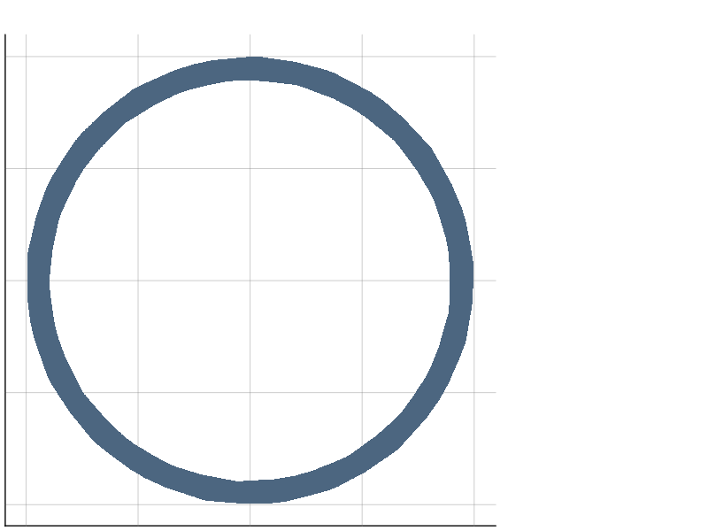
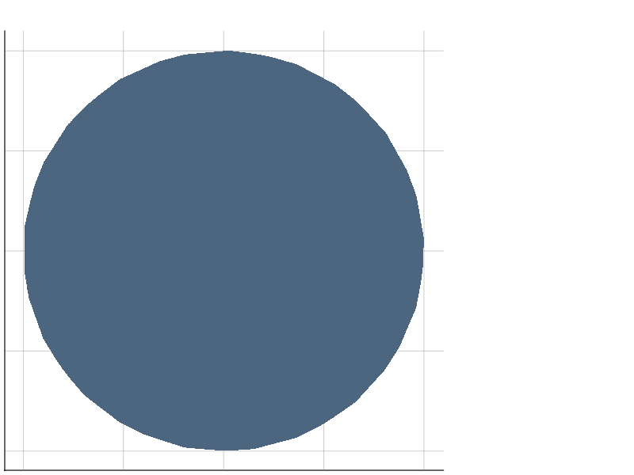

CSG operations
Boolean operations
Basic operations
Base.union — Methodunion(a::AbstractGeometry...)Computes the union of several solids. The dimensions must match.
julia> s = union(cube(50), sphere(50));
N-ary union may be performed in this way:
julia> s = union(([0,10i]+square(5) for i in 1:5)...);
Base.intersect — Methodintersect(a::AbstractGeometry...)Computes the intersection of several solids. Mismatched dimensions are allowed; 3d solids will be intersected with the horizontal plane (as if by the slice() operation) and a 2d intersection will be returned.
julia> s = intersect(cube(50), sphere(50));
Base.setdiff — Methodsetdiff(a::AbstractGeometry, b::AbstractGeometry)Computes the difference of two solids. The following dimensions are allowed: (2,2), (3,3), and (2,3). In the latter case, the 3d object will be intersected with the horizontal plane via the slice() operation.
julia> s = setdiff(cube(50), [50,0,0]+sphere(50));
ConstructiveGeometry.complement — Functioncomplement(x::AbstractGeometry)
~xReturns the complement of x, i.e. an object X such that y ∩ X = y ∖ x.
Complements are symbolic and only supported as shortcuts for some Boolean operations: ∪, ∩, ∖. (They would not make any sense in most other constructions anyway).
Complements are provided as a shortcut to simplify “subtractive” operations, i.e. chains of intersections and differences. See Three-dimensional embeddings of two-dimensional objects.
Rewriting rules
The CSG tree as constructed by the user is subjected to immediate rewriting (this is performed by the union, intersect etc. functions), before any meshing function is called.
The following rewriting rules are used:
- associative operations (
union,intersect,hull,minkowski) are regrouped:
julia> display(union(union(square(1), circle(1)), polygon([])))
union
├─ Square
├─ Circle
└─ ShapeMesh # 1 polygon(s), 0 vertices- single-operand unions and intersects are removed:
julia> display(union(square(1)))
Square- symbolic complements are replaced by the appropriate values:
julia> display(intersect(square(1), ~circle(1), polygon([])))
intersection
├─ difference
│ ├─ Square
│ └─ Circle
└─ ShapeMesh # 1 polygon(s), 0 vertices- empty unions and intersections are removed:
julia> display(union(square(1),union(),circle(1)))
union
├─ Square
└─ CircleConvex hull
ConstructiveGeometry.hull — Functionhull(s::AbstractGeometry...)
hull(s::AbstractGeometry | StaticVector...)Represents the convex hull of given solids (and, possibly, individual points). Mixing dimensions (and points) is allowed.
julia> s = hull(cube(50), [50,0,0]+sphere(50));
In the case of mixed dimensions, two-dimensional objects are understood as included in the horizontal plane, unless they have been subjected to a three-dimensional affine transformation; in that case, this transformation is applied to their vertices. See Three-dimensional embeddings of two-dimensional objects.
Minkowski sum
ConstructiveGeometry.minkowski — Functionminkowski(s1::AbstractGeometry, s2::AbstractGeometry)Represents the Minkowski sum of given solids. Mixing dimensions is allowed (and returns a three-dimensional object).
julia> c = cube(10);
julia> s1 = minkowski(square(50), circle(20));
julia> s2 = minkowski(c, cube(20,1,1));
julia> s3 = minkowski(c, polygon([[0,0],[0,30],[30,0]]));
Input mesh is not PWN!The Minkowski sum between a polygon and a circle of radius r is the same as the offset of the polygon by this radius: 
Minkowski sum between volumes is allowed; e.g. the Minkowski sum of two axis-aligned parallelepipeds is again a parallelepiped: 
Minkowski sum between a volume and a polygon is also allowed; here the polygon is a triangle in the horizontal plane: 
Slicing and projection
Slicing and projection convert a volume to a shape. These transformations are only defined with respect to horizontal planes, since these are the only planes in which canonical (x,y) coordinates are defined.
To use another plane, say the image of the horizontal plane by a rotation R, apply the inverse rotation of R to the object to bring the situation back to the horizontal plane.
slice
ConstructiveGeometry.slice — Functionslice(z, s...)
slice(s...)Computes the (3d to 2d) intersection of a shape and the given horizontal plane (at z=0 if not precised).
julia> s = slice()*setdiff(sphere(20),sphere(18));
project
ConstructiveGeometry.project — Functionproject(s...)Computes the (3d to 2d) projection of a shape on the horizontal plane.
julia> s = project()*setdiff(sphere(20),sphere(18));
Intersection with half-space
ConstructiveGeometry.half — Functionhalf(direction, s...; origin = 0)
half(direction; origin = 0) * sKeeps only the part of objects s lying in the halfspace/halfplane with given direction and origin.
direction may be either a vector, or one of the six symbols :top, :bottom, :left, :right, :front, :back.
origin may be either a point (i.e. one point on the hyperplane) or a scalar (b in the equation a*x=b of the hyperplane).
julia> s = half(:bottom)*setdiff(sphere(20),sphere(18));